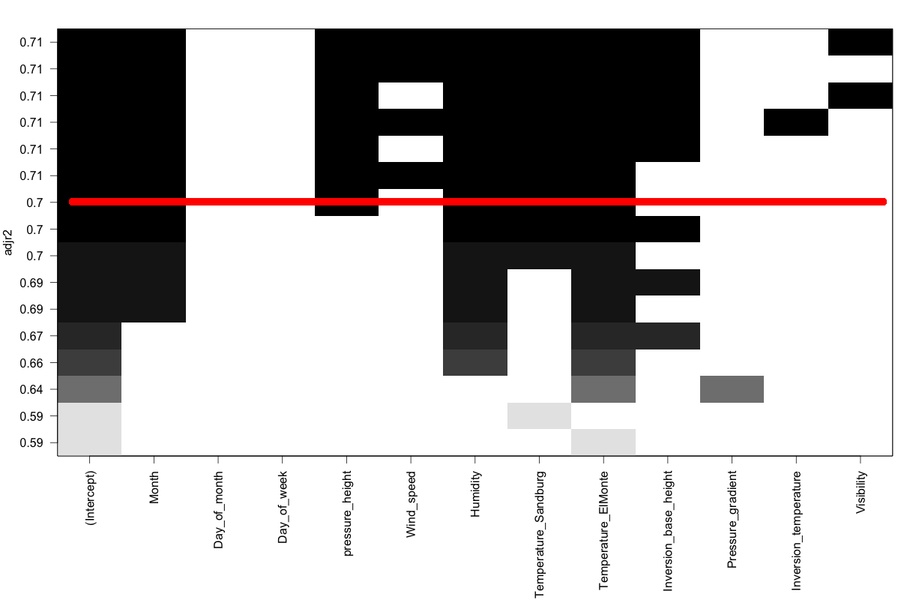

Model Selection Approaches
It is possible to build multiple models from a given set of X variables. But building a good quality model can make all the difference. Here, we explore various approaches to build and evaluate regression models.
Data Prep
Lets prepare the data upon which the various model selection approaches will be applied. A dataframe containing only the predictors and one containing the response variable is created for use in the model seection algorithms.
inputData <- read.csv("http://rstatistics.net/wp-content/uploads/2015/09/ozone2.csv", stringsAsFactors=F)
response_df <- inputData['ozone_reading'] # Y variable
predictors_df <- inputData[, !names(inputData) %in% "ozone_reading" ] # X variables
head(inputData)
#=> Month Day_of_month Day_of_week ozone_reading pressure_height Wind_speed Humidity
#=> 1 1 4 3.01 5480 8 20.00000
#=> 1 2 5 3.20 5660 6 48.41432
#=> 1 3 6 2.70 5710 4 28.00000
#=> 1 4 7 5.18 5700 3 37.00000
#=> 1 5 1 5.34 5760 3 51.00000
#=> 1 6 2 5.77 5720 4 69.00000
#=>
#=> Temperature_Sandburg Temperature_ElMonte Inversion_base_height Pressure_gradient
#=> 37.78175 35.31509 5000.000 -15
#=> 38.00000 45.79294 4060.589 -14
#=> 40.00000 48.48006 2693.000 -25
#=> 45.00000 49.19898 590.000 -24
#=> 54.00000 45.32000 1450.000 25
#=> 35.00000 49.64000 1568.000 15
#=>
#=> Inversion_temperature Visibility
#=> 30.56000 200
#=> 46.86914 300
#=> 47.66000 250
#=> 55.04000 100
#=> 57.02000 60
#=> 53.78000 60Stepwise Regression
In stepwise regression, we pass the full model to step function. It iteratively searches the full scope of variables in backwards directions by default, if scope is not given. It performs multiple iteractions by droping one X variable at a time. In each iteration, multiple models are built by dropping each of the X variables at a time. The AIC of the models is also computed and the model that yields the lowest AIC is retained for the next iteration.
In simpler terms, the variable that gives the minimum AIC when dropped, is dropped for the next iteration, until there is no significant drop in AIC is noticed.
The code below shows how stepwise regression can be done. We are providing the full model here, so a backwards stepwise will be performed, which means, variables will only be removed. In forward stepwise, variables will be progressively added.
lmMod <- lm(ozone_reading ~ . , data = inputData)
selectedMod <- step(lmMod)
summary(selectedMod)
#=> Call:
#=> lm(formula = ozone_reading ~ Month + pressure_height + Wind_speed +
#=> Humidity + Temperature_Sandburg + Temperature_ElMonte + Inversion_base_height,
#=> data = inputData)
#=>
#=> Residuals:
#=> Min 1Q Median 3Q Max
#=> -13.5219 -2.6652 -0.1885 2.5702 12.7184
#=>
#=> Coefficients:
#=> Estimate Std. Error t value Pr(>|t|)
#=> (Intercept) 97.9206462 27.5285900 3.557 0.000425 ***
#=> Month -0.3632285 0.0752403 -4.828 2.05e-06 ***
#=> pressure_height -0.0218974 0.0051670 -4.238 2.87e-05 ***
#=> Wind_speed -0.1738621 0.1207299 -1.440 0.150715
#=> Humidity 0.0817383 0.0132480 6.170 1.85e-09 ***
#=> Temperature_Sandburg 0.1532862 0.0403667 3.797 0.000172 ***
#=> Temperature_ElMonte 0.5149553 0.0686170 7.505 4.92e-13 ***
#=> Inversion_base_height -0.0003529 0.0001743 -2.025 0.043629 *
#=> ---
#=> Signif. codes: 0 '***' 0.001 '**' 0.01 '*' 0.05 '.' 0.1 ' ' 1
#=>
#=> Residual standard error: 4.233 on 358 degrees of freedom
#=> Multiple R-squared: 0.7186, Adjusted R-squared: 0.7131
#=> F-statistic: 130.6 on 7 and 358 DF, p-value: < 2.2e-16
all_vifs <- car::vif(selectedMod)
print(all_vifs)
#=> Month pressure_height Wind_speed Humidity
#=> 1.377397 5.995937 1.330647 1.386716
#=>
#=> Temperature_Sandburg Temperature_ElMonte Inversion_base_height
#=> 6.781597 11.616208 1.926758Multicollinearity and Statistical Significance
Say, one of the methods discussed above or below has given us a best model based on a criteria such as Adj-Rsq. It is not guaranteed that the condition of multicollinearity (checked using car::vif) will be satisfied or even the model be statistically significant. To satisfy these two conditions, the below approach can be taken.
Recursively remove variables with VIF > 4
signif_all <- names(all_vifs)
# Remove vars with VIF> 4 and re-build model until none of VIFs don't exceed 4.
while(any(all_vifs > 4)){
var_with_max_vif <- names(which(all_vifs == max(all_vifs))) # get the var with max vif
signif_all <- signif_all[!(signif_all) %in% var_with_max_vif] # remove
myForm <- as.formula(paste("ozone_reading ~ ", paste (signif_all, collapse=" + "), sep="")) # new formula
selectedMod <- lm(myForm, data=inputData) # re-build model with new formula
all_vifs <- car::vif(selectedMod)
}
summary(selectedMod)
# Call:
# lm(formula = myForm, data = inputData)
#
# Residuals:
# Min 1Q Median 3Q Max
# -15.5859 -3.4922 -0.3876 3.1741 16.7640
#
# Coefficients:
# Estimate Std. Error t value Pr(>|t|)
# (Intercept) -2.007e+02 1.942e+01 -10.335 < 2e-16 ***
# Month -2.322e-01 8.976e-02 -2.587 0.0101 *
# pressure_height 3.607e-02 3.349e-03 10.773 < 2e-16 ***
# Wind_speed 2.346e-01 1.423e-01 1.649 0.1001
# Humidity 1.391e-01 1.492e-02 9.326 < 2e-16 ***
# Inversion_base_height -1.122e-03 1.975e-04 -5.682 2.76e-08 ***
# ---
# Signif. codes: 0 '***' 0.001 '**' 0.01 '*' 0.05 '.' 0.1 ' ' 1
#
# Residual standard error: 5.172 on 360 degrees of freedom
# Multiple R-squared: 0.5776, Adjusted R-squared: 0.5717
# F-statistic: 98.45 on 5 and 360 DF, p-value: < 2.2e-16
car::vif(selectedMod)
# Month pressure_height Wind_speed Humidity Inversion_base_height
# 1.313154 1.687105 1.238613 1.178276 1.658603 The VIFs of all the X’s are below 2 now. So, the condition of multicollinearity is satisfied. But the variable wind_speed in the model with p value > .1 is not statistically significant. For this specific case, we could just re-build the model without wind_speed and check all variables are statistically significant. But, what if you had a different data that selected a model with 2 or more non-significant variables. What if, you had to select models for many such data. So, lets write a generic code for this.
Recursively remove non-significant variables
all_vars <- names(selectedMod[[1]])[-1] # names of all X variables
# Get the non-significant vars
summ <- summary(selectedMod) # model summary
pvals <- summ[[4]][, 4] # get all p values
not_significant <- character() # init variables that aren't statsitically significant
not_significant <- names(which(pvals > 0.1))
not_significant <- not_significant[!not_significant %in% "(Intercept)"] # remove 'intercept'. Optional!
# If there are any non-significant variables,
while(length(not_significant) > 0){
all_vars <- all_vars[!all_vars %in% not_significant[1]]
myForm <- as.formula(paste("ozone_reading ~ ", paste (all_vars, collapse=" + "), sep="")) # new formula
selectedMod <- lm(myForm, data=inputData) # re-build model with new formula
# Get the non-significant vars.
summ <- summary(selectedMod)
pvals <- summ[[4]][, 4]
not_significant <- character()
not_significant <- names(which(pvals > 0.1))
not_significant <- not_significant[!not_significant %in% "(Intercept)"]
}
summary(selectedMod)
#=> Call:
#=> lm(formula = myForm, data = inputData)
#
#=> Residuals:
#=> Min 1Q Median 3Q Max
#=> -15.1537 -3.5541 -0.2294 3.2273 17.0106
#=>
#=> Coefficients:
#=> Estimate Std. Error t value Pr(>|t|)
#=> (Intercept) -1.989e+02 1.944e+01 -10.234 < 2e-16 ***
#=> Month -2.694e-01 8.709e-02 -3.093 0.00213 **
#=> pressure_height 3.589e-02 3.355e-03 10.698 < 2e-16 ***
#=> Humidity 1.466e-01 1.426e-02 10.278 < 2e-16 ***
#=> Inversion_base_height -1.047e-03 1.927e-04 -5.435 1.01e-07 ***
#=> ---
#=> Signif. codes: 0 '***' 0.001 '**' 0.01 '*' 0.05 '.' 0.1 ' ' 1
#=>
#=> Residual standard error: 5.184 on 361 degrees of freedom
#=> Multiple R-squared: 0.5744, Adjusted R-squared: 0.5697
#=> F-statistic: 121.8 on 4 and 361 DF, p-value: < 2.2e-16
#=> car::vif(selectedMod)
#=> Month pressure_height Humidity Inversion_base_height
#=> 1.230346 1.685245 1.071214 1.570431 In the resulting model, both statistical significance and multicollinearity is acceptable.
Best subsets
Best subsets is a technique that relies on stepwise regression to search, find and visualise regression models. But unlike stepwise regression, you have more options to see what variables were included in various shortlisted models, force-in or force-out some of the explanatory variables and also visually inspect the model’s performance w.r.t Adj R-sq.
library(leaps)
regsubsetsObj <- regsubsets(x=predictors_df ,y=response_df, nbest = 2, really.big = T)
plot(regsubsetsObj, scale = "adjr2") # regsubsets plot based on R-sq
How to interpret the regsubsets plot?
The regsubsets plot shows the adjusted R-sq along the Y-axis for many models created by combinations of variables shown on the X-axis. For instance, draw an imaginary horizontal line along the X-axis from any point along the Y-axis. That line would correspond to a linear model, where, the black boxes that line touches form the X variables. For example, the red line in the image touches the black boxes belonging to Intercept, Month, pressure_height, Humidity, Temperature_Sandburg and Temperature_Elmonte. The Adjusted R-sq for that model is the value at which the red line touches the Y-axis.
The caveat however is that it is not guaranteed that these models will be statistically significant.
Leaps
Leaps is similar to best subsets but is known to use a better algorithm to shortlist the models.
library(leaps)
leapSet <- leaps(x=predictors_df, y=inputData$ozone_reading, nbest = 1, method = "adjr2") # criterion could be one of "Cp", "adjr2", "r2". Works for max of 32 predictors.
#=> $which
#=> 1 2 3 4 5 6 7 8 9 A B C
#=> 1 FALSE FALSE FALSE FALSE FALSE FALSE TRUE FALSE FALSE FALSE FALSE FALSE
#=> 2 FALSE FALSE FALSE FALSE FALSE TRUE FALSE TRUE FALSE FALSE FALSE FALSE
#=> 3 TRUE FALSE FALSE FALSE FALSE TRUE FALSE TRUE FALSE FALSE FALSE FALSE
#=> 4 TRUE FALSE FALSE TRUE FALSE TRUE FALSE TRUE FALSE FALSE FALSE FALSE
#=> 5 TRUE FALSE FALSE TRUE FALSE TRUE TRUE TRUE FALSE FALSE FALSE FALSE
#=> 6 TRUE FALSE FALSE TRUE FALSE TRUE TRUE TRUE TRUE FALSE FALSE FALSE
#=> 7 TRUE FALSE FALSE TRUE TRUE TRUE TRUE TRUE TRUE FALSE FALSE FALSE
#=> 8 TRUE FALSE FALSE TRUE TRUE TRUE TRUE TRUE TRUE FALSE TRUE FALSE
#=> 9 TRUE FALSE TRUE TRUE TRUE TRUE TRUE TRUE TRUE FALSE TRUE FALSE
#=> 10 TRUE FALSE TRUE TRUE TRUE TRUE TRUE TRUE TRUE FALSE TRUE TRUE
#=> 11 TRUE TRUE TRUE TRUE TRUE TRUE TRUE TRUE TRUE FALSE TRUE TRUE
#=> 12 TRUE TRUE TRUE TRUE TRUE TRUE TRUE TRUE TRUE TRUE TRUE TRUE
#=>
#=> $adjr2
#=> [1] 0.5945612 0.6544828 0.6899196 0.6998209 0.7079506 0.7122214 0.7130796 0.7134627 0.7130404 0.7125416
#=> [11] 0.7119148 0.7112852
# Suppose, we want to choose a model with 4 variables.
selectVarsIndex <- leapSet$which[4, ] # pick selected vars
newData <- cbind(response_df, predictors_df[, selectVarsIndex]) # new data for building selected model
selectedMod <- lm(ozone_reading ~ ., data=newData) # build model
summary(selectedMod)
#=> Call:
#=> lm(formula = ozone_reading ~ ., data = newData)
#=>
#=> Residuals:
#=> Min 1Q Median 3Q Max
#=> -13.9636 -2.8928 -0.0581 2.8549 12.6286
#=>
#=> Coefficients:
#=> Estimate Std. Error t value Pr(>|t|)
#=> (Intercept) 74.611786 27.188323 2.744 0.006368 **
#=> Month -0.426133 0.069892 -6.097 2.78e-09 ***
#=> pressure_height -0.018478 0.005137 -3.597 0.000366 ***
#=> Humidity 0.096978 0.012529 7.740 1.01e-13 ***
#=> Temperature_ElMonte 0.704866 0.049984 14.102 < 2e-16 ***
#=> ---
#=> Signif. codes: 0 '***' 0.001 '**' 0.01 '*' 0.05 '.' 0.1 ' ' 1
#=>
#=> Residual standard error: 4.33 on 361 degrees of freedom
#=> Multiple R-squared: 0.7031, Adjusted R-squared: 0.6998
#=> F-statistic: 213.7 on 4 and 361 DF, p-value: < 2.2e-16RegBest() from FactoMineR
library(FactoMineR)
regMod <- RegBest(y=inputData$ozone_reading, x = predictors_df)
regMod$all # summary of best model of all sizes based on Adj A-sq
regMod$best # best model
#=> Call:
#=> lm(formula = as.formula(as.character(formul)), data = don)
#=>
#=> Residuals:
#=> Min 1Q Median 3Q Max
#=> -13.6805 -2.6589 -0.1952 2.6045 12.6521
#=>
#=> Coefficients:
#=> Estimate Std. Error t value Pr(>|t|)
#=> (Intercept) 88.8519747 26.8386969 3.311 0.001025 **
#=> Month -0.3354044 0.0728259 -4.606 5.72e-06 ***
#=> pressure_height -0.0202670 0.0050489 -4.014 7.27e-05 ***
#=> Humidity 0.0784813 0.0130730 6.003 4.73e-09 ***
#=> Temperature_Sandburg 0.1450456 0.0400188 3.624 0.000331 ***
#=> Temperature_ElMonte 0.5069526 0.0684938 7.401 9.65e-13 ***
#=> Inversion_base_height -0.0004224 0.0001677 -2.518 0.012221 *
#=> ---
#=> Signif. codes: 0 '***' 0.001 '**' 0.01 '*' 0.05 '.' 0.1 ' ' 1
#=>
#=> Residual standard error: 4.239 on 359 degrees of freedom
#=> Multiple R-squared: 0.717, Adjusted R-squared: 0.7122
#=> F-statistic: 151.6 on 6 and 359 DF, p-value: < 2.2e-16Simulated Annealing
Given a set of variables, a simulated annealing algorithm seeks a k-variable subset which is optimal, as a surrogate for the whole set, with respect to a given criterion. Annealing offers a method of finding the best subsets of predictor variables. Since the correlation or covariance matrix is a input to the anneal() function, only continuous variables are used to compute the best subsets.
library(subselect)
results <- anneal(cor(predictors_df), kmin=1, kmax=ncol(predictors_df)-1, nsol=4, niter=10, setseed=TRUE) # perform annealing<
print(results$bestsets)
#=> Var.1 Var.2 Var.3 Var.4 Var.5 Var.6 Var.7 Var.8 Var.9 Var.10 Var.11
#=> Card.1 11 0 0 0 0 0 0 0 0 0 0
#=> Card.2 7 10 0 0 0 0 0 0 0 0 0
#=> Card.3 5 6 8 0 0 0 0 0 0 0 0
#=> Card.4 1 2 6 11 0 0 0 0 0 0 0
#=> Card.5 1 3 5 6 11 0 0 0 0 0 0
#=> Card.6 2 3 5 6 9 11 0 0 0 0 0
#=> Card.7 1 2 3 5 10 11 12 0 0 0 0
#=> Card.8 1 2 3 4 5 6 8 12 0 0 0
#=> Card.9 1 2 3 4 5 6 9 10 12 0 0
#=> Card.10 1 2 3 4 5 6 8 9 10 12 0
#=> Card.11 1 2 3 4 5 6 7 8 9 10 12The bestsets value in the output reveal the best variables to select for each cardinality (number of predictors). The values inside results$bestsets correspond to the column index position of predicted_df, that is, which variables are selected for each cardinality.
num_vars <- 3
selectVarsIndex <- results$bestsets[num_vars, 1:num_vars]
newData <- cbind(response_df, predictors_df[, selectVarsIndex]) # new data for building selected model
selectedMod <- lm(ozone_reading ~ ., data=newData) # build model
summary(selectedMod)
#=> Call:
#=> lm(formula = ozone_reading ~ ., data = newData)
#=>
#=> Residuals:
#=> Min 1Q Median 3Q Max
#=> -14.6948 -2.7279 -0.3532 2.9004 13.4161
#=>
#=> Coefficients:
#=> Estimate Std. Error t value Pr(>|t|)
#=> (Intercept) -23.98819 1.50057 -15.986 < 2e-16 ***
#=> Wind_speed 0.08796 0.11989 0.734 0.464
#=> Humidity 0.11169 0.01319 8.468 6.34e-16 ***
#=> Temperature_ElMonte 0.49985 0.02324 21.506 < 2e-16 ***
#=> ---
#=> Signif. codes: 0 '***' 0.001 '**' 0.01 '*' 0.05 '.' 0.1 ' ' 1
#
# Residual standard error: 4.648 on 362 degrees of freedom
# Multiple R-squared: 0.6569, Adjusted R-squared: 0.654
# F-statistic: 231 on 3 and 362 DF, p-value: < 2.2e-16Like other methods, anneal() does not guarantee that the model be statistically significant.
Comparing Models Using ANOVA
If you have two or more models that are subsets of a larger model, you can use anova() to check if the additional variable(s) contribute to the predictive ability of the model. In below example, the baseMod is a model built with 7 explanatory variables, while, mod1 through mod5 contain one predictor less than the previous model.
# ANOVA
baseMod <- lm(ozone_reading ~ Month + pressure_height + Humidity + Temperature_Sandburg + Temperature_ElMonte + Inversion_base_height + Wind_speed, data=inputData)
mod1 <- lm(ozone_reading ~ Month + pressure_height + Humidity + Temperature_Sandburg + Temperature_ElMonte + Inversion_base_height, data=inputData)
mod2 <- lm(ozone_reading ~ Month + pressure_height + Humidity + Temperature_Sandburg + Temperature_ElMonte, data=inputData)
mod3 <- lm(ozone_reading ~ Month + pressure_height + Humidity + Temperature_ElMonte, data=inputData)
mod4 <- lm(ozone_reading ~ Month + pressure_height + Temperature_ElMonte, data=inputData)
anova(baseMod, mod1, mod2, mod3, mod4)
#=> Model 1: ozone_reading ~ Month + pressure_height + Humidity + Temperature_Sandburg +
#=> Temperature_ElMonte + Inversion_base_height + Wind_speed
#=> Model 2: ozone_reading ~ Month + pressure_height + Humidity + Temperature_Sandburg +
#=> Temperature_ElMonte + Inversion_base_height
#=> Model 3: ozone_reading ~ Month + pressure_height + Humidity + Temperature_Sandburg +
#=> Temperature_ElMonte
#=> Model 4: ozone_reading ~ Month + pressure_height + Humidity + Temperature_ElMonte
#=> Model 5: ozone_reading ~ Month + pressure_height + Temperature_ElMonte
#=>
#=> Res.Df RSS Df Sum of Sq F Pr(>F)
#=> row 1 358 6414.4
#=> row 2 359 6451.5 -1 -37.16 2.0739 0.150715
#=> row 3 360 6565.5 -1 -113.98 6.3616 0.012095 *
#=> row 4 361 6767.0 -1 -201.51 11.2465 0.000883 ***
#=> row 5 362 7890.0 -1 -1123.00 62.6772 3.088e-14 ***
---
Signif. codes: 0 '***' 0.001 '**' 0.01 '*' 0.05 '.' 0.1 ' ' 1For each row in the output, the anova() tests a hypothesis comparing two models. For instance, row 2 compares baseMod (Model 1) and mod1 (Model 2) in the output. The null hypothesis is that the two models are equal in fitting the data (i.e. the Y variable), while, the alternative hypothesis is that the full model is better (i.e. the additional X variable improves the model).
So what’s the inference? Except for row 2, all other rows have significant p values. This means all the additional variables in models 1, 2 and 3 are contributing to respective models. From row 1 output, the Wind_speed is not making the baseMod (Model 1) any better. So the best model we have amongst this set is mod1 (Model1).